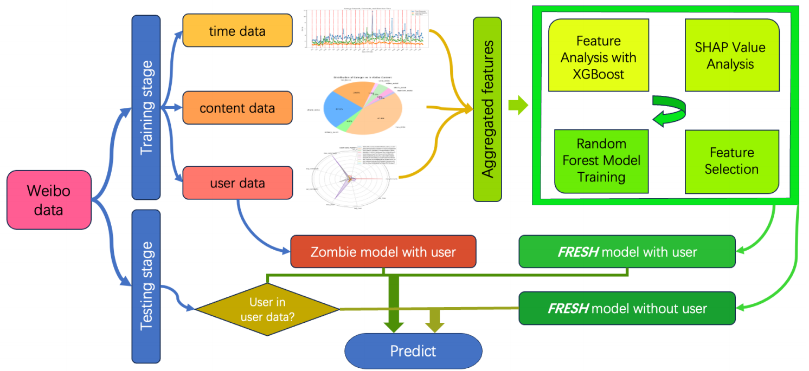
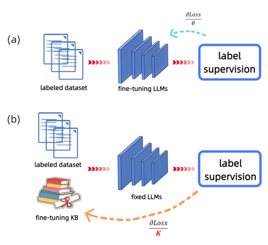

My Work
The two following papers are my previous science projects!
Predicting the interactions of Weibo
Abstracts:
The research introduces several novel methodologies, particularly in user behavior analysis, where we developed a Zombie user
identification system and comprehensive user profiling metrics.
Our analysis demonstrates that user behavioral patterns are the
most significant predictors of engagement success, followed by
temporal and content features. The study evaluated multiple
machine learning approaches, including Random Forest, XGBoost, Neural Networks with Random Forest emerging as the
most effective model with a system named FRESH (Feature
Random Forest Explained by SHAP Hyperboost) we create
for choosing the best features, achieving a 31.51% accuracy
rate on our weighted evaluation metric the same implication in
Tianchi platform, ranking seventh among all participants in the engagement prediction challenge.
The paper can be downloaded via the link:
Predicting the interactions of Weibo
| Model | Accuracy | Key advantage |
|---|---|---|
| Random Forest | 31.49% | Higher accuracy |
| XGBoost | 30.47% | Faster training |
Tuning LLMs with Explicit Knowledge
Abstracts:
Explicit knowledge is essential for reasoning and understanding, offering interpretability and ease of transfer and editing.
In contrast, traditional parameter fine-tuning in neural networks lacks transparency and flexibility.
In this paper, we propose a novel framework for fine-tuning
language models using explicit knowledge. Unlike traditional fine-tuning that directly modifies model parameters,
our framework enhances the model's capabilities by externalizing its implicit knowledge, allowing for corrections and
adjustments on an explicit knowledge base. This knowledge
base can be independently validated, modified, and easily
transferred.
- Forward Propagation
- Backward Propagation